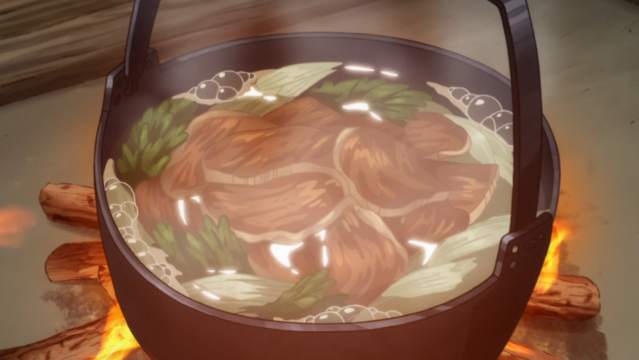

Yuk Ohaw

Ingredients:
8 cups water
16-inch piece of kombu
2 big handfuls of bonito flakes
Salt
2 leeks, sliced
Mustard greens, 1 bunch
Venison slices
Awase miso, optional
Index
Citatap
Home
Kombu Sito